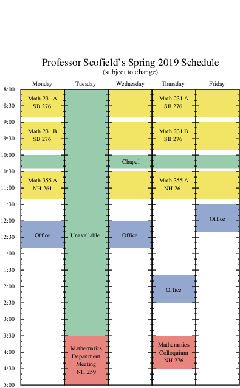

MATH
231 A/B
Differential Equations with Linear Algebra
Spring, 2019
Main
Calendar
Course syllabus
:
SLOs
,
expectations
,
hw policies
,
grade calculation
,
accommodations & miscellaneous
WebWork
(various HW assignments)
Hand-checked assignment solutions:
1
Known errors
in the textbook
Grading Codes
(see the
TAE document
for many algebra helps)
Professor Scofield's schedule
(see right margin)
Video resources
Linear Algebra
examples (from mathispower4u.com)
Differential Equation
examples (from mathispower4u.com)
Instructional videos from
Khan Academy
on
linear algebra
topics, and on
ODEs

Additional reading resources
Introduction to Linear Algebra
, by Thomas Scofield
Relevant material is found in the first 2 chapters, excepting Sections 1.4 and 1.6.
Linear Algebra for Everyone
, by Lorenzo Robbiano
A Concise Introduction to Linear Algebra
, by Géza Schay
Elementary Linear Algebra
, notes by Keith Matthews of U. of Queensland
The
Ordinary Differential Equations Project
, by Thomas W. Judson of Stephen F. Austin State University
Notes on Diffy Qs: Differential Equations for Engineers
, by Jirí Lebl
Engineering Differential Equations: Theory and Applications
, by Bill Goodwine
Differential Equations: A Primer for Scientists and Engineers
, by Christian Constanda
Elementary Differential Equations
, by William F. Trench, with
student solutions manual
Software Links
A
level curve plotter
A plotter: try out your
functions involving the Heavyside unit step
here
Direction fields
popular
dfield
program:
Matlab version
or
standalone java program
draws direction field only, not integral curves)
A
direction field plotter by Ariel Barton
(of the Univ. of Arkansas)
Darryl Nester's direction field plotter
(of Bluffton College)
Direction field plotter written in geogebra
(also will display solution curves)
One written locally as a
SageMathCell App
Phase plane
A general
phase plane plotter by Ariel Barton
(of the Univ. of Arkansas)
popular
pplane
program: Use links for
dfield
above
A
SageMathCell Phase Plane app
, and a
counterpart in 3D
An app for emphasizing connections between matrices, e-values and phase portrait for
linear systems
Several flash applets for phase planes by L. Felipe Martins:
Numerical solutions app
(Euler method, Runge-Kutta, and more)
An app to generate
Picard iterates
Octave:
documentation
| downloads for
MacOS 10.11 or later
,
Windows or Linux
| to run
online
rowswap.m
(to mimick
rowSwap()
on TI 83/84)
mrow.m
(to mimick
*row()
on TI 83/84)
mrowadd.m
(to mimick
*row+()
on TI 83/84)
eulerMethod.m
, an Euler method routine
vRK4.m
, implements 4th-order Runge-Kutta (works for systems, too)
Sage:
official website
(documentation/downloads) | Calvin's
online server
(create account on first visit) |
SageMathCell
(one-off commands) |
examples
relevant to MATH 231
Sage cell for carrying out
elementary row operations
on a matrix
Wolfram alpha
Content Supplements
Differential equations supplements
Table of
Laplace transforms
Some worked examples of
inverse Laplace transforms
More
Inverse Laplace transform practice
Linear algebra supplements
Matrices on TI-83/84:
Video instruction on
entering a matrix
, on
elementary row operations
A
summary page
by Dr. Claude S. Moore of Cape Fear Community College, NC
Last Modified: